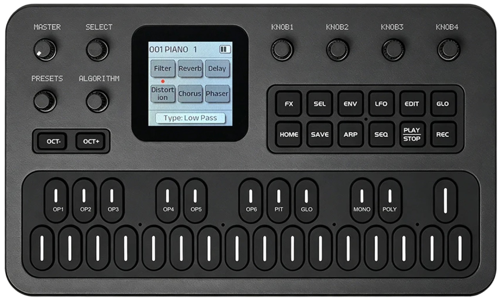
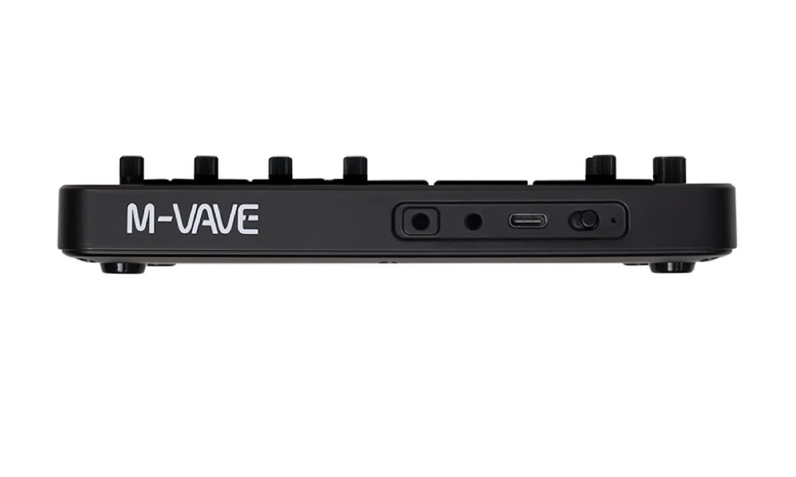

1. Meet the panel
Every knob, button and what the screen shows
The panel at a glance
The FM-1 is about 16 cm wide and weighs 250 g. The controls are arranged in three blocks: a left block of four knobs and two octave buttons, the screen in the middle, a right block of four parameter knobs and twelve buttons, and the 27-key keyboard underneath.

- MASTER, the volume pot.
- SELECT, turns pages.
- PRESETS, chooses one of 128 voices.
- ALGORITHM, chooses one of 32 algorithms.
- OCT− / OCT+, octave shift.
- Screen, 240 × 240 pixels, 1.54 inch.
- KNOB 1–4, context-dependent parameters.
- Top button row: FX, SEL, ENV, LFO, EDIT, GLO.
- Bottom button row: HOME, SAVE, ARP, SEQ, PLAY/STOP, REC.
- Keyboard, 27 silicone keys with an LED each.
Left side
| Control | What it does |
|---|---|
| MASTER | The only real potentiometer (300° of travel). Sets output volume; the screen briefly shows Volume. |
| SELECT | An endless encoder. Clockwise = next page, counter-clockwise = previous page of the current mode. The footer shows where you are, e.g. 1/2 Arpeggio. In FX mode it moves between the six effect slots instead. It also confirms dialogs (rename, copy, reset). |
| PRESETS | Steps through voices 001–128, wrapping round. Each click loads the voice at once, so you hear it immediately. A list pops up for about one second. Disabled while the sequencer is on (the pattern chooses the voice). |
| ALGORITHM | Turn: choose algorithm 01–32, with a diagram popup. Hold OCT− or OCT+ and turn: transpose (see Playing). |
| OCT− OCT+ | Shift the keyboard one octave per press, from −3 to +3. Press both together to reset octave and transpose to zero. |
SELECT, PRESETS, ALGORITHM and K1–K4 turn forever and have no end stops, so their position tells you nothing. Always read the value on the screen. Only MASTER has a pointer.
Right side
KNOB 1–4
These four encoders change whatever the screen shows. The four tiles on screen are laid out like this:
K1 = top left, K2 = top right, K3 = bottom left, K4 = bottom right. The tile shows the parameter's name and value. Two details to remember:
- If a tile is blank, that knob does nothing on this page.
- Values are bounded: they stop at the minimum and maximum (except a few switches, which wrap).
The button pad
| Button | Press | Where it is covered |
|---|---|---|
| FX | Opens the effect chain page. Again = back to Home. | 7 |
| SEL | Only on the FX page: grab an effect so you can move it. | 7 |
| ENV | Switches the global ADSR envelope on (LED lit) and opens its page. Press again to switch it off. Off by default. | 6 |
| LFO | Opens the two LFO pages. Again = Home. | 6 |
| EDIT | Opens the voice editor. The black keys become selectors (OP1–OP6, PIT, GLO, MONO, POLY). | 5 |
| GLO | Global settings (MIDI channels, pitch-bend range, velocity, glide, reset). The screen calls it “Global” (and some pages “Globe”). | 9 |
| HOME | Back to the oscilloscope screen from anywhere. Hold to toggle Bluetooth. | 9 |
| SAVE | Press and hold to write everything you changed to memory. | 4 |
| ARP | Toggles the arpeggiator and opens its page. | 8 |
| SEQ | Toggles the sequencer and opens its page. | 8 |
| PLAY/STOP | Starts and stops the sequencer. | 8 |
| REC | Starts and stops step recording. | 8 |
Modes are exclusive pages: FX, ENV, LFO, EDIT, GLO, ARP and SEQ each take over the screen. Pressing the same button again (or HOME) leaves. ARP and SEQ cannot both be on; if you try, the screen says Disable SEQ to enter or Disable ARP to enter.
Reading the screen
Every page uses the same frame:
- Top bar: the loaded voice, number then name (
001 PIANO 1), and a battery icon at the right. - Middle: the page content: four tiles, the effect grid, a diagram, or the oscilloscope.
- Bottom bar: the mode and page (
1/6 OP1 Tuning). On the effects page it shows the value being edited (CutOff: 1004Hz).
Values in ENV are drawn as block bars (more blocks = more); everything else is a number or word in a box.
The Home screen
The Home screen is an oscilloscope: a yellow line that wiggles with the sound you play, flat when silent. Footer: OSC.
HOME always returns here.
Popups and messages
Short overlays (about one second) confirm what you just did:
| You do | Screen shows |
|---|---|
| Turn PRESETS | List with number and name, current voice highlighted |
| Turn ALGORITHM | Algorithm diagram: carriers, modulators, feedback loop |
| Press OCT− / OCT+ | Octave and the offset (e.g. −2) |
| Hold OCT and turn ALGORITHM | Transpose and the value |
| Turn MASTER | Volume and the level |
| Hold SAVE | Preset Saved |
| Press PLAY/STOP or REC with SEQ off | Enable SEQ first |
| Press ARP while SEQ is on / SEQ while ARP is on | Disable SEQ to enter / Disable ARP to enter |
| Confirm a bank reset | Reset Success |
| Battery critically low | Full-screen LOW BATTERY that stays until you charge or switch off |
Left: the PRESETS popup. Right: the ALGORITHM popup (algorithm 8).
LEDs
- Button legends are backlit. A mode’s button lights when that mode is active.
- OCT LEDs: both off at 0; slow blink at ±1; fast blink at ±2; solid at ±3. The LED on the OCT− side is lit for negative shifts, OCT+ for positive.
- Key LEDs light while a key is held, or while the arpeggiator or sequencer plays it.
- HOME LED shows Bluetooth: blinking = on but not connected, solid = connected, off = Bluetooth off.
- SEQ transport: PLAY lights green while playing, STOP orange when stopped, REC red when recording.
The manual says green for play and orange for stop. A few photos show it red. We follow the manual.
Rear connections

| Port | Use |
|---|---|
| 3.5 mm audio out (TRS) | Headphones or line out. The engine and effects are mono, so left and right are identical. Plugging in headphones mutes the built-in speaker. Use a proper TRS plug, or the speaker may not mute and noise can appear. |
| 3.5 mm MIDI IN (TRS) | Receives MIDI from another instrument with a 3.5 mm-to-5-pin-DIN adapter (not included). |
| USB-C | MIDI, audio, charging and firmware updates. |
| Power switch | On/off. Runs on the 2000 mAh battery (about 12 hours) or USB power. |
There is no MIDI out socket. The FM-1 sends MIDI notes over USB and Bluetooth only.